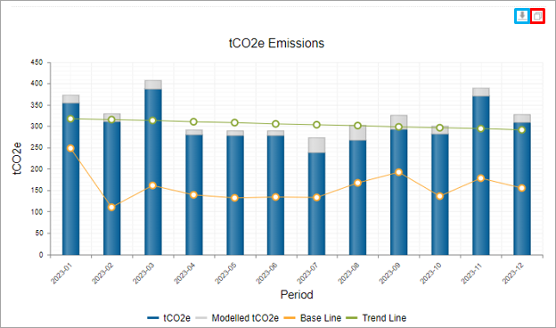

The bar graphs and pie charts on all Environment dashboards can be expanded using the symbol outlined in red below. When the charts are expanded to full size it is easier for the user to see the values being displayed on the charts, particularly the percentages of the different pie chart segments.
The expanded graphs can be dragged to increase their size and are closed using the X in the top right-hand corner of the graph.

The bar graphs, pie charts and tables on all Environment dashboards can be exported using the symbol outlined in blue in the image above. This allows the user to insert the graphs into company documents or manipulate the table values to provide the required analysis.